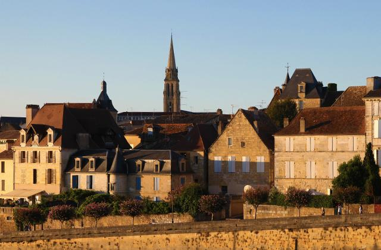
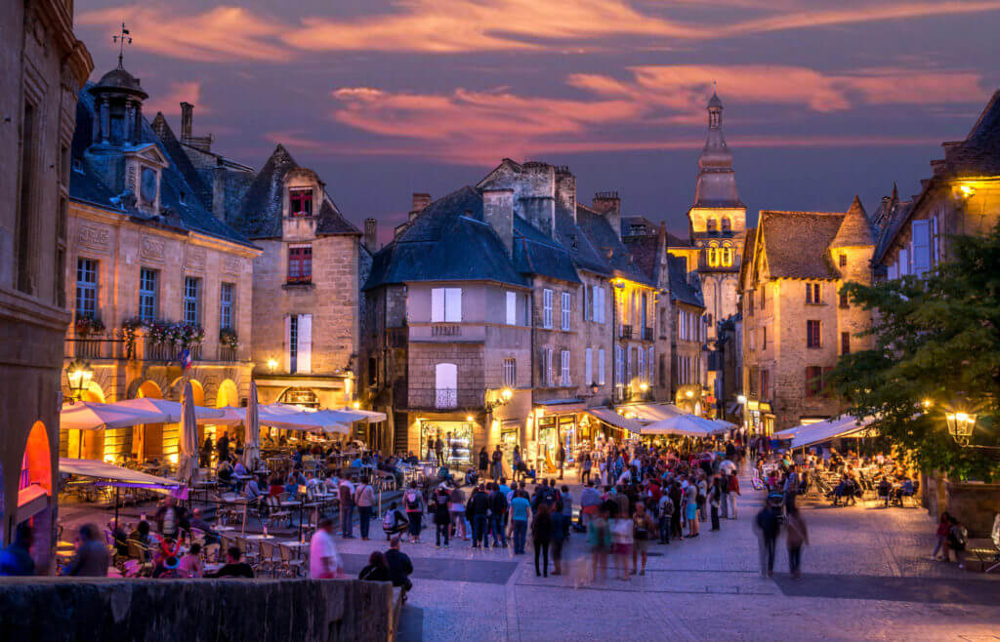

Les lieux incontournables de la Dordogne
La grotte de Lascaux

Les jardins de Marqueyssac

Les châteaux du Périgord

La ville de Périgueux

La ville de Bergerac
La gouffre de Proumeyssac

La ville de Sarlat-la-Canéda
Le parc Le Bournat